Homepage design review
Twelve homepage sections and the footer, in page order. Open any preview to see it at full size.
Complete section images
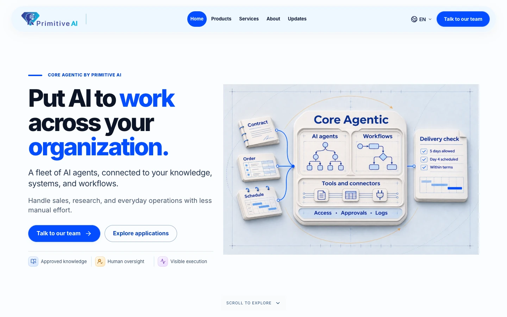
Put AI to work across your organization.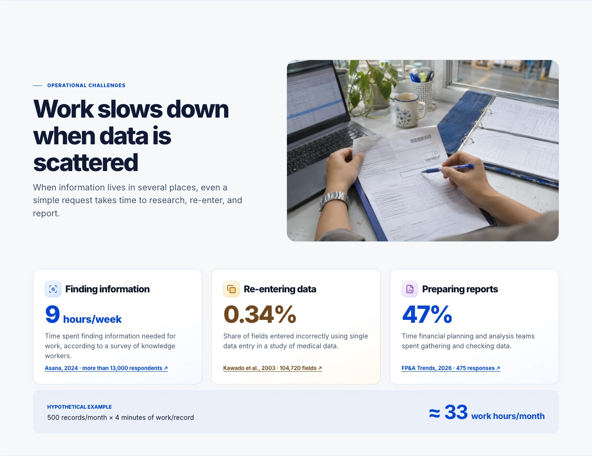
Work slows down when data is scattered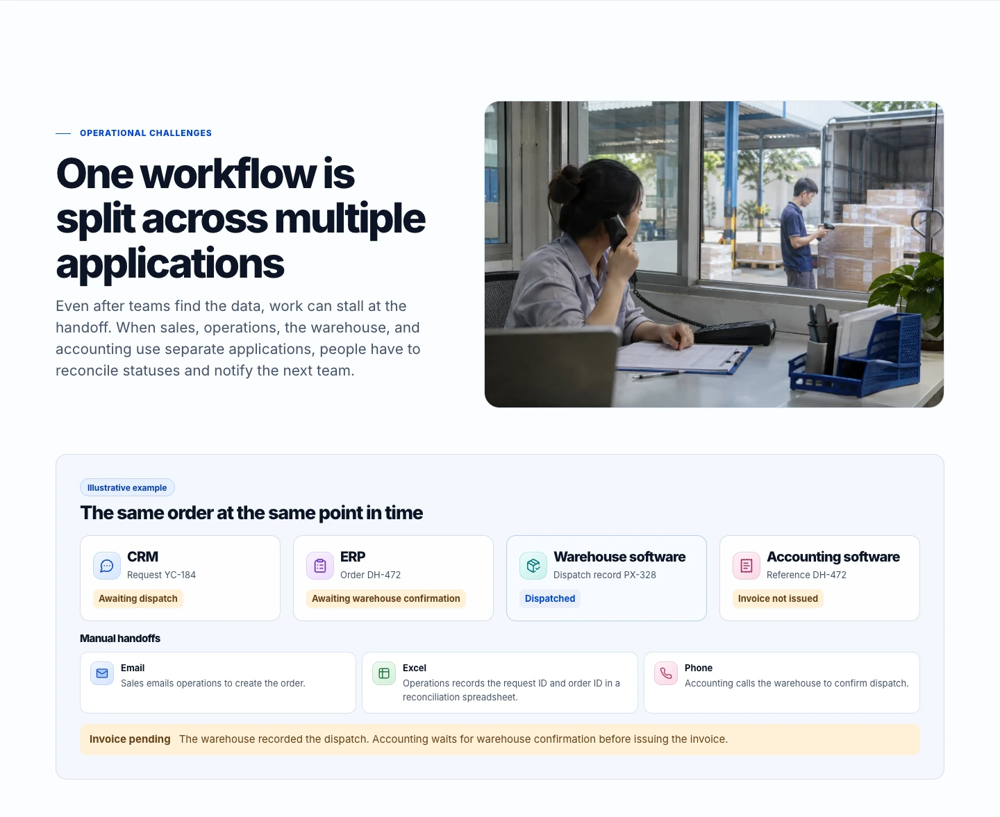
One workflow is split across multiple applications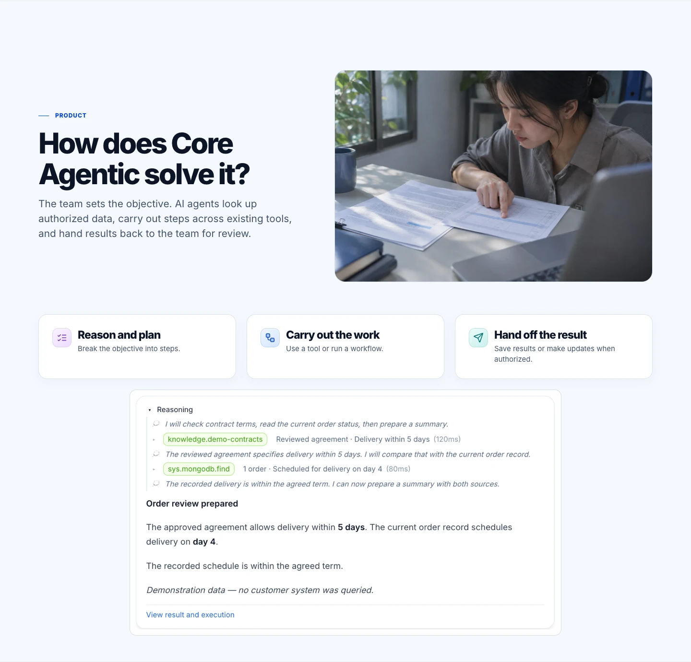
How does Core Agentic solve it?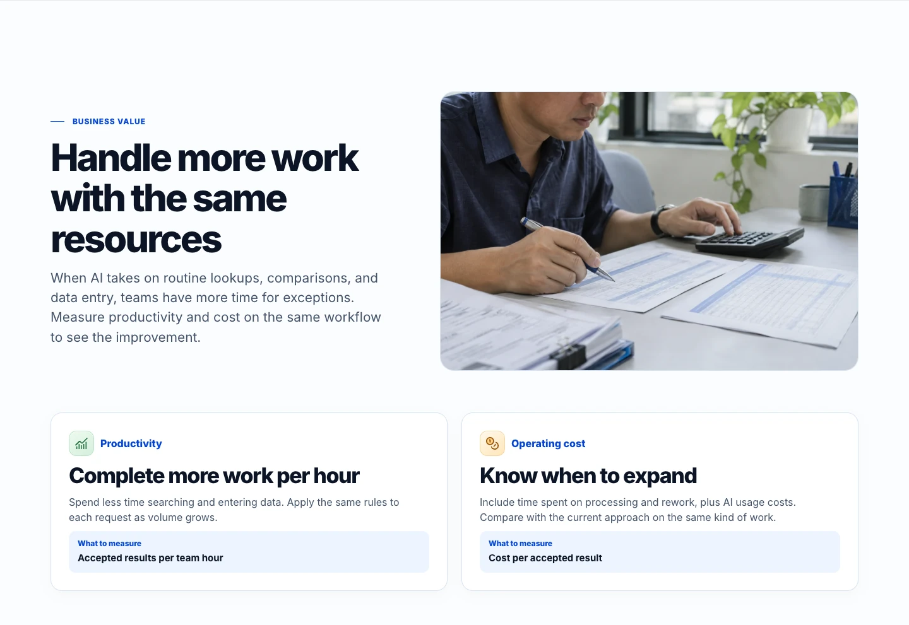
Handle more work with the same resources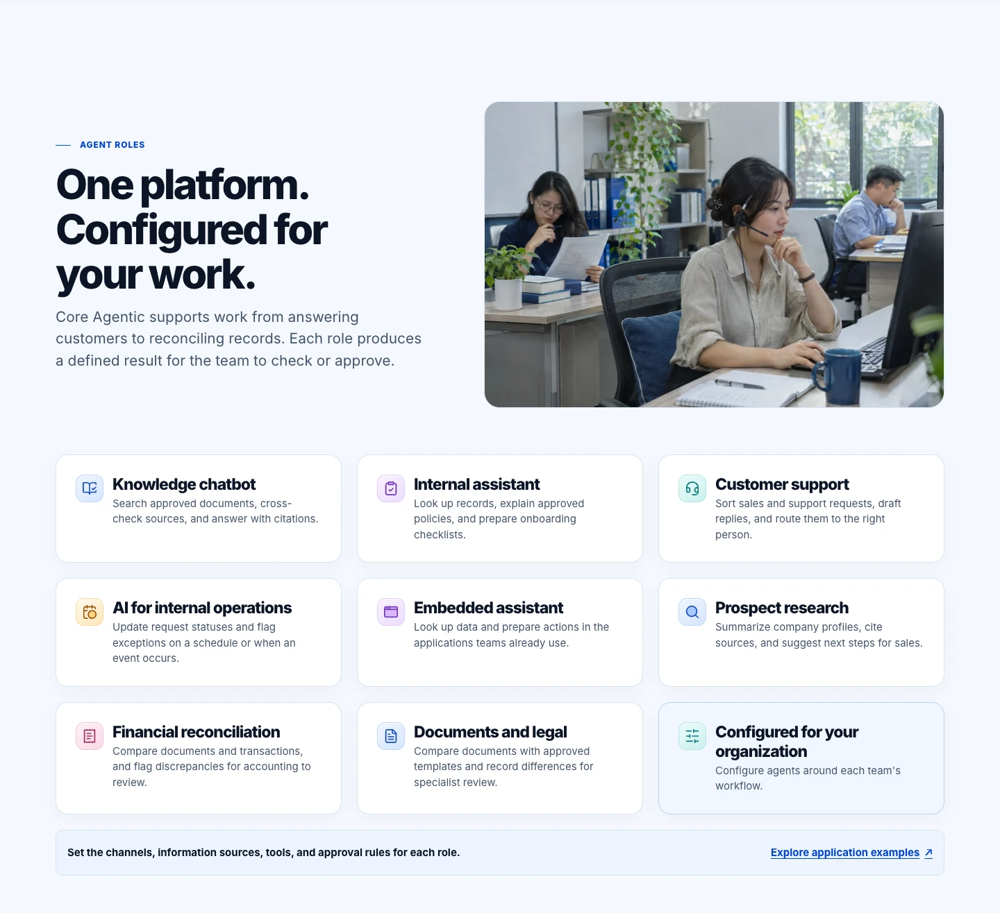
One platform. Configured for your work.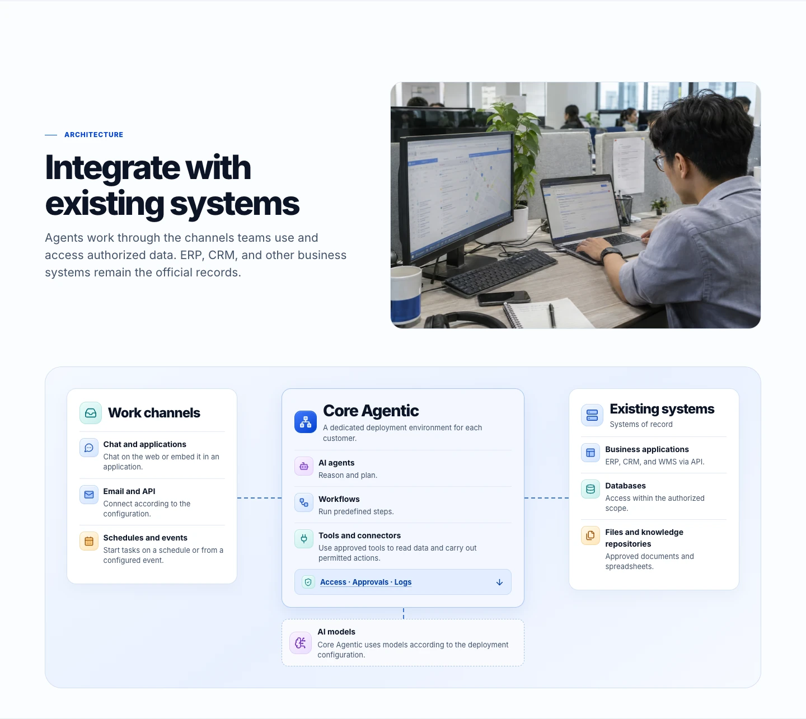
Integrate with existing systems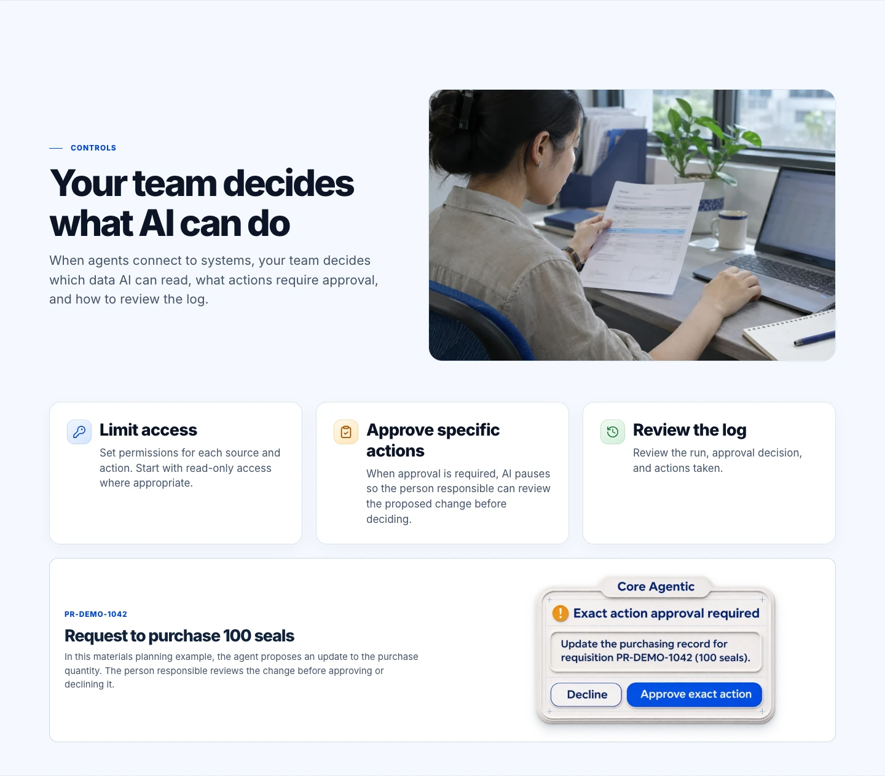
Your team decides what AI can do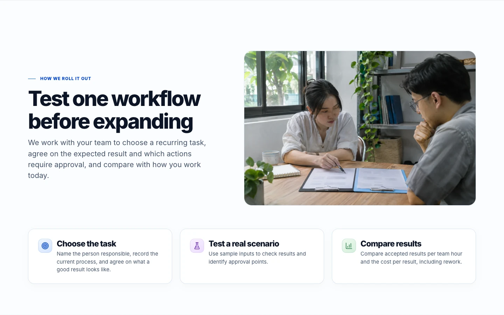
Test one workflow before expanding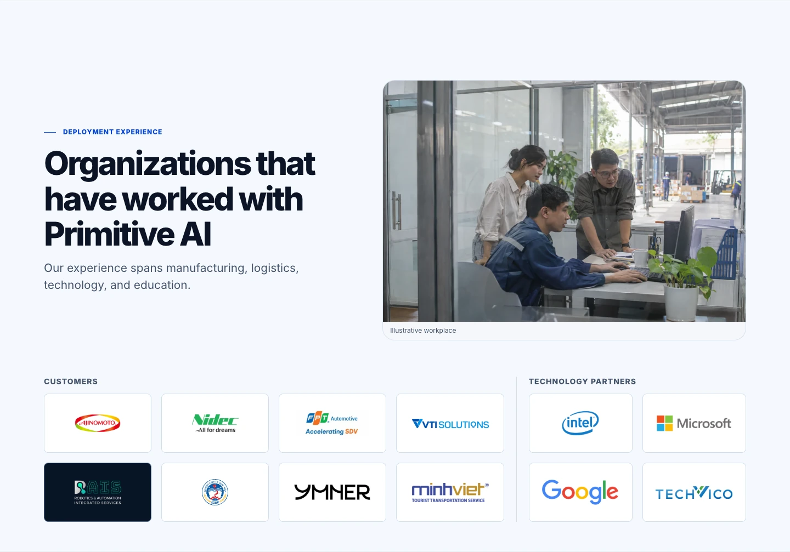
Organizations that have worked with Primitive AI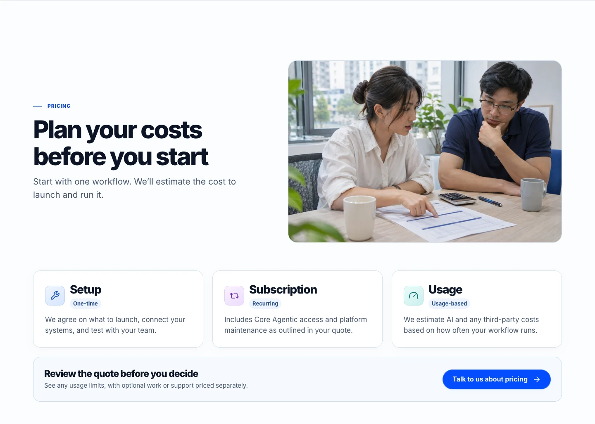
Plan your costs before you start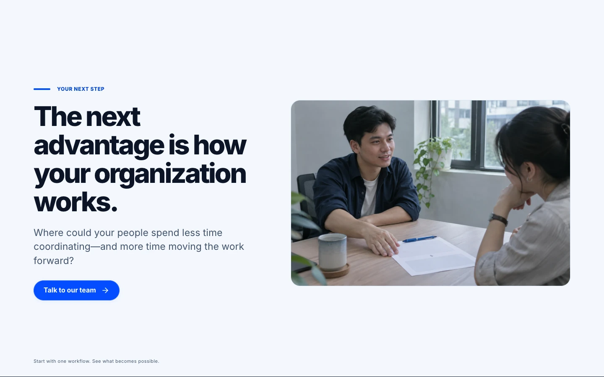
The next advantage is how your organization works.